今日主线
Top themes
macro_data: Diesel prices hit another record high. If you’re shocked, wait until you see your grocery bill.
fiscal_policy: U.S. Treasury sanctions another widespread cyber-scam hub, Xinbi Guarantee
fiscal_policy: Germany moves to tax bitcoin like stocks as new draft bill targets tax-free gains
核心资产
1D snapshot · 2026-09-10
美股 SPY
-0.46%
QQQ
-0.29%
VIX
4.71%
BTC
-1.10%
Gold
1.01%
Oil
4.42%
异动雷达
按 1D 绝对波动排序 · 2026-09-10
^VIX
US_MACRO_MARKET · range_bound · 16.46
4.71%
CL=F
COMMODITIES · strong_uptrend · 97.14
4.42%
BZ=F
COMMODITIES · strong_uptrend · 102.08
4.25%
NG=F
COMMODITIES · downtrend · 2.81
-3.74%
3690.HK
HK_MARKET · strong_downtrend · 77.80
-3.47%
1211.HK
HK_MARKET · range_bound · 81.80
-2.44%
SI=F
COMMODITIES · strong_uptrend · 67.82
2.29%
BINANCECOIN
CRYPTO · strong_uptrend · 722.75
-2.29%
Must Read
优先阅读
这类宏观数据会直接改变市场对通胀、增长和政策路径的预期。
Tier 1
MarketWatch Top Stories
macro_data
high
BTC
DXY
GC=F
QQQ
SPY
财政和贸易政策会影响增长、通胀、企业利润和跨境资本流。
Tier 1
CoinDesk
fiscal_policy
low
财政和贸易政策会影响增长、通胀、企业利润和跨境资本流。
Tier 1
CoinDesk
fiscal_policy
low
加密市场结构和监管变化会影响 BTC、ETH 及相关股票的风险溢价。
Tier 2
CoinDesk
crypto_market_structure
high
BTC
COIN
ETH
crypto market
图表面板
Summary charts · 2026-09-10
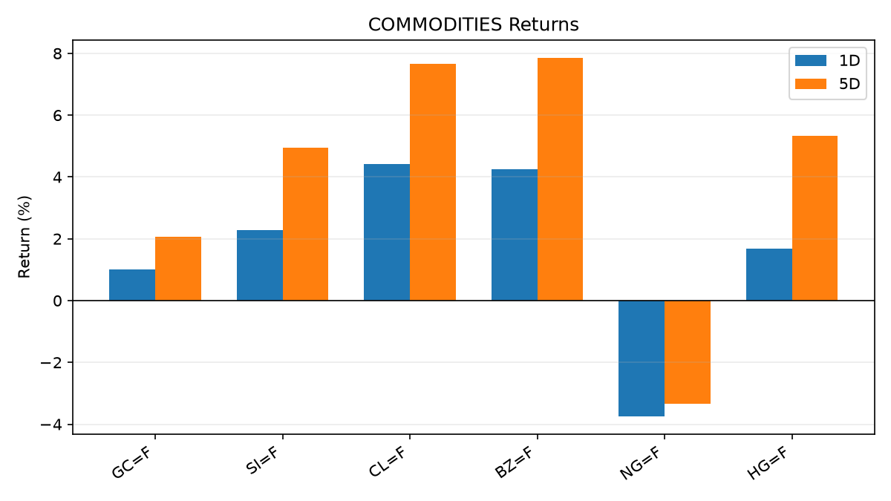
COMMODITIES
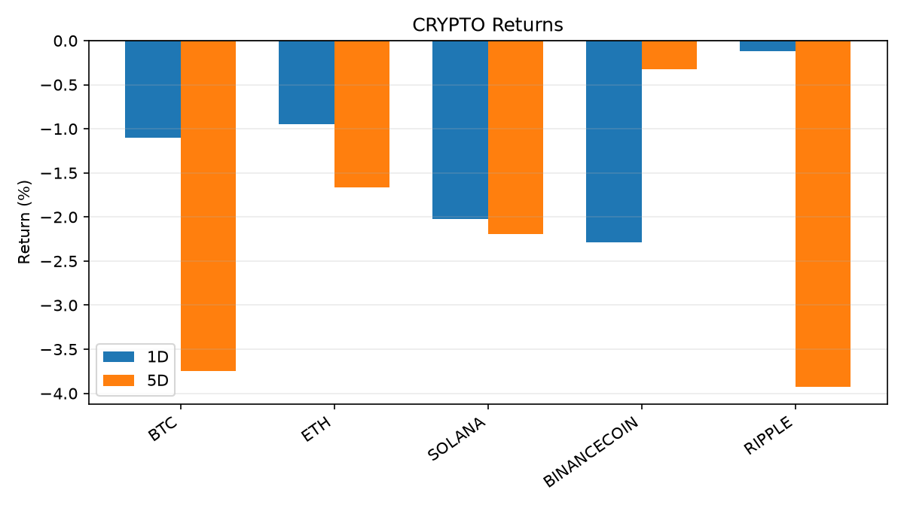
CRYPTO
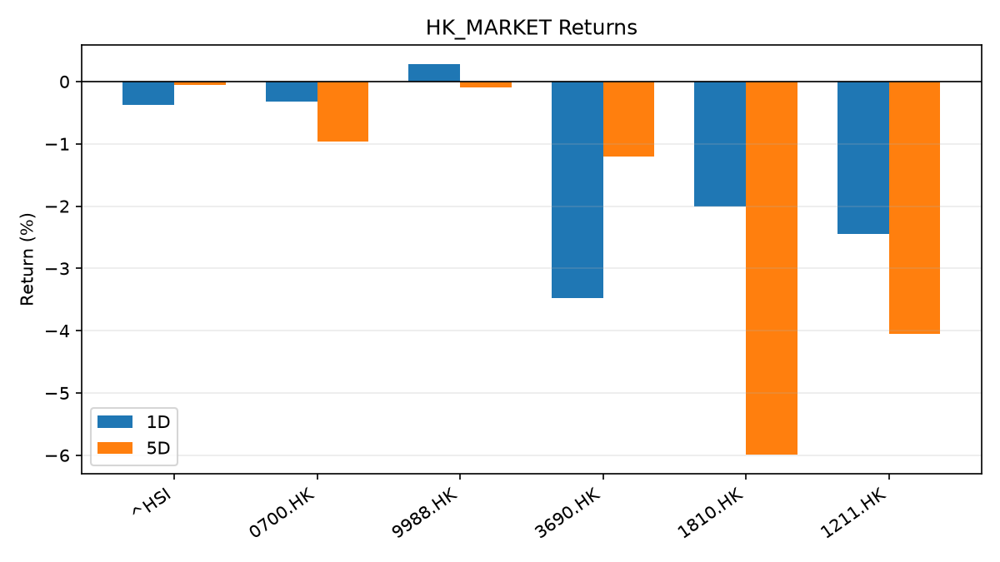
HK_MARKET
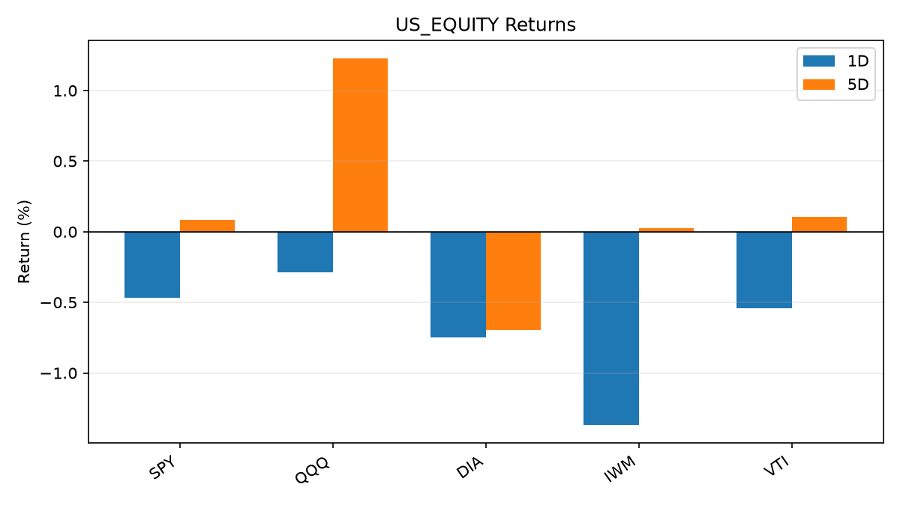
US_EQUITY
Global Macro Morning Briefing - 2026-09-10
Not financial advice / 非投资建议。
0. 今日总览
市场状态：unknown。市场信号不足，暂不判断明确状态。
今日三大主线：
macro_data: Diesel prices hit another record high. If you’re shocked, wait until you see your grocery bill.
fiscal_policy: U.S. Treasury sanctions another widespread cyber-scam hub, Xinbi Guarantee
fiscal_policy: Germany moves to tax bitcoin like stocks as new draft bill targets tax-free gains
一句话结论：今日晨报重点关注：这类宏观数据会直接改变市场对通胀、增长和政策路径的预期。；财政和贸易政策会影响增长、通胀、企业利润和跨境资本流。。跨资产方面，SPY 1D -0.46%；QQQ 1D -0.29%；^VIX 1D 4.71%；TLT 1D -0.57%；GC=F 1D 1.01%；CL=F 1D 4.42%；BTC 1D -1.10%；ETH 1D -0.95%；市场信号不足，暂不判断明确状态。政策、通胀、利率、美元、美债、能源和加密监管仍是主要观察线索。所有结论仅基于公开数据与短摘要整理，不构成投资建议。
1. 隔夜跨资产市场
美股：SPY 1D -0.46%，QQQ 1D -0.29%，整体趋势需结合 VIX 和利率确认。
美债/美元：TLT 1D -0.57%，美元指数 1D -0.06%，是判断折现率压力的核心线索。
黄金/原油：黄金 1D 1.01%，原油 1D 4.42%，用于观察避险、通胀和地缘风险。
加密：BTC 1D -1.10%，ETH 1D -0.95%，关注是否独立于纳指走出加密自身行情。
港股/A股：恒生 1D -0.38%，沪深300/上证 1D n/a，重点看中国政策预期与人民币线索。
风险观察：关注后续数据是否确认当前跨资产信号。
US_EQUITY
symbol
latest close
1D
5D
1M
YTD
trend
SPY
762.40
-0.46%
0.08%
-1.38%
11.60%
range_bound
QQQ
716.31
-0.29%
1.23%
-0.63%
16.83%
range_bound
DIA
524.07
-0.75%
-0.70%
-2.77%
8.36%
range_bound
IWM
290.64
-1.37%
0.02%
-3.11%
16.83%
range_bound
VTI
375.56
-0.54%
0.10%
-1.59%
11.67%
range_bound
US_MACRO_MARKET
symbol
latest close
1D
5D
1M
YTD
trend
^VIX
16.46
4.71%
8.29%
7.72%
13.44%
range_bound
DX-Y.NYB
98.78
-0.06%
-0.89%
-1.03%
0.37%
downtrend
TLT
81.73
-0.57%
-0.17%
-0.40%
-6.09%
downtrend
IEF
91.89
-0.29%
-0.22%
-0.93%
-4.36%
downtrend
COMMODITIES
symbol
latest close
1D
5D
1M
YTD
trend
GC=F
4,438.20
1.01%
2.07%
1.75%
2.87%
range_bound
SI=F
67.82
2.29%
4.95%
4.16%
-3.88%
strong_uptrend
CL=F
97.14
4.42%
7.67%
18.28%
69.47%
strong_uptrend
BZ=F
102.08
4.25%
7.85%
16.37%
68.03%
strong_uptrend
NG=F
2.81
-3.74%
-3.34%
0.47%
-22.42%
downtrend
HG=F
6.85
1.69%
5.33%
3.92%
21.51%
strong_uptrend
HK_MARKET
symbol
latest close
1D
5D
1M
YTD
trend
^HSI
25,317.18
-0.38%
-0.05%
-2.39%
-3.88%
range_bound
0700.HK
434.00
-0.32%
-0.96%
-7.82%
-30.34%
strong_downtrend
9988.HK
109.80
0.27%
-0.09%
-13.13%
-26.31%
range_bound
3690.HK
77.80
-3.47%
-1.21%
-16.39%
-25.62%
strong_downtrend
1810.HK
26.38
-2.01%
-5.99%
-1.05%
-34.51%
range_bound
1211.HK
81.80
-2.44%
-4.05%
-8.81%
-17.16%
range_bound
CRYPTO
symbol
latest close
1D
5D
1M
YTD
trend
BTC
78,219.84
-1.10%
-3.75%
20.92%
-10.68%
range_bound
ETH
2,465.84
-0.95%
-1.67%
28.67%
-16.98%
uptrend
SOLANA
101.68
-2.02%
-2.20%
32.05%
-18.35%
strong_uptrend
BINANCECOIN
722.75
-2.29%
-0.32%
19.76%
-16.22%
strong_uptrend
RIPPLE
1.39
-0.12%
-3.92%
39.28%
-24.24%
range_bound
2. 今日最重要的 10 条新闻
1. Diesel prices hit another record high. If you’re shocked, wait until you see your grocery bill.
来源：MarketWatch Top Stories
时间：2026-09-09T22:51:00+00:00
地区：US
事件类型：macro_data
重要性层级：Tier 1
一句话摘要：The most important price in America is one most drivers never pay — and it reaches the CPI, the Fed and the European Central Bank in the same week.
为什么重要：这类宏观数据会直接改变市场对通胀、增长和政策路径的预期。
可能影响：主要影响 DXY，方向为 positive，强度 high；通胀压力可能推高政策利率预期并支撑美元。
资产：DXY
方向：positive
强度：high
原因：通胀压力可能推高政策利率预期并支撑美元。
资产：TLT
方向：negative
强度：high
原因：通胀上行通常推升收益率、压低长债价格。
资产：QQQ
方向：negative
强度：high
原因：更高利率对成长股估值折现率不利。
资产：SPY
方向：mixed
强度：medium
原因：名义增长可能支撑收入，但更高利率压制估值。
资产：GC=F
方向：mixed
强度：medium
原因：通胀对黄金是支撑，但实际利率上行会形成压力。
资产：BTC
方向：mixed
强度：medium
原因：抗通胀叙事和流动性收紧可能相互抵消。
原文链接：https://www.marketwatch.com/story/diesel-prices-hit-another-record-high-if-youre-shocked-wait-until-you-see-your-grocery-bill-afee7076?mod=mw_rss_topstories
2. U.S. Treasury sanctions another widespread cyber-scam hub, Xinbi Guarantee
3. Germany moves to tax bitcoin like stocks as new draft bill targets tax-free gains
来源：CoinDesk
时间：2026-09-09T14:00:00+00:00
地区：global
事件类型：crypto_market_structure
重要性层级：Tier 2
一句话摘要：PayPal expands stablecoin rails with custom token issuance platform
为什么重要：加密市场结构和监管变化会影响 BTC、ETH 及相关股票的风险溢价。
可能影响：主要影响 BTC，方向为 mixed，强度 high；加密监管或 ETF 进展会改变 BTC 的资金流和风险溢价。
资产：BTC
方向：mixed
强度：high
原因：加密监管或 ETF 进展会改变 BTC 的资金流和风险溢价。
资产：ETH
方向：mixed
强度：high
原因：监管框架会影响 ETH 产品化和机构参与度。
资产：COIN
方向：mixed
强度：medium
原因：监管清晰度和执法风险会影响交易平台估值。
资产：crypto market
方向：mixed
强度：high
原因：信息影响整个加密市场结构，但方向取决于细节。
原文链接：https://www.coindesk.com/business/2026/09/09/paypal-expands-stablecoin-rails-with-launch-of-custom-token-issuance-platform
5. U.S. Bank takes next step towards launching its stablecoin with cross-border payment test
6. Visa tells CNBC it is expanding data offering for blockchain lenders as demand for stablecoin-linked cards surges
来源：CNBC Economy
时间：2026-09-08T11:30:01+00:00
地区：US
事件类型：crypto_market_structure
重要性层级：Tier 2
一句话摘要：Visa is doubling down on blockchain-powered financial services with a new program to help issuers of stablecoin-linked cards access loans.
为什么重要：加密市场结构和监管变化会影响 BTC、ETH 及相关股票的风险溢价。
可能影响：主要影响 BTC，方向为 mixed，强度 high；加密监管或 ETF 进展会改变 BTC 的资金流和风险溢价。
资产：BTC
方向：mixed
强度：high
原因：加密监管或 ETF 进展会改变 BTC 的资金流和风险溢价。
资产：ETH
方向：mixed
强度：high
原因：监管框架会影响 ETH 产品化和机构参与度。
资产：COIN
方向：mixed
强度：medium
原因：监管清晰度和执法风险会影响交易平台估值。
资产：crypto market
方向：mixed
强度：high
原因：信息影响整个加密市场结构，但方向取决于细节。
原文链接：https://www.cnbc.com/2026/09/08/visa-blockchain-lender-stablecoin-cards.html
7. Iran eases currency controls to let traders bring earnings home in crypto: FT
8. Oil’s surge back above $100 fuels fresh inflation fears at a crucial time for interest rates
来源：MarketWatch Top Stories
时间：2026-09-09T20:36:00+00:00
地区：US
事件类型：other
重要性层级：Tier 3
一句话摘要：A prolonged oil shock could keep consumer prices elevated and complicate the path for central banks already navigating a difficult policy environment.
为什么重要：这条信息暂未匹配到重大宏观、政策或市场事件，更适合作为背景跟踪。
可能影响：主要影响 DXY，方向为 positive，强度 high；通胀压力可能推高政策利率预期并支撑美元。
资产：DXY
方向：positive
强度：high
原因：通胀压力可能推高政策利率预期并支撑美元。
资产：TLT
方向：negative
强度：high
原因：通胀上行通常推升收益率、压低长债价格。
资产：QQQ
方向：negative
强度：high
原因：更高利率对成长股估值折现率不利。
资产：SPY
方向：mixed
强度：medium
原因：名义增长可能支撑收入，但更高利率压制估值。
资产：GC=F
方向：mixed
强度：medium
原因：通胀对黄金是支撑，但实际利率上行会形成压力。
资产：BTC
方向：mixed
强度：medium
原因：抗通胀叙事和流动性收紧可能相互抵消。
原文链接：https://www.marketwatch.com/story/brent-crude-reaches-100-as-war-in-iran-intensifies-b73832e2?mod=mw_rss_topstories
9. Bitcoin recovers toward $79,000 as Zcash records a $500 million ETF haul
来源：CoinDesk
时间：2026-09-09T04:35:55+00:00
地区：global
事件类型：other
重要性层级：Tier 3
一句话摘要：Bitcoin recovers toward $79,000 as Zcash records a $500 million ETF haul
为什么重要：这条信息暂未匹配到重大宏观、政策或市场事件，更适合作为背景跟踪。
可能影响：主要影响 BTC，方向为 mixed，强度 high；加密监管或 ETF 进展会改变 BTC 的资金流和风险溢价。
资产：BTC
方向：mixed
强度：high
原因：加密监管或 ETF 进展会改变 BTC 的资金流和风险溢价。
资产：ETH
方向：mixed
强度：high
原因：监管框架会影响 ETH 产品化和机构参与度。
资产：COIN
方向：mixed
强度：medium
原因：监管清晰度和执法风险会影响交易平台估值。
资产：crypto market
方向：mixed
强度：high
原因：信息影响整个加密市场结构，但方向取决于细节。
原文链接：https://www.coindesk.com/markets/2026/09/09/bitcoin-recovers-toward-usd79-000-as-zcash-records-a-usd500-million-etf-haul
3. 政策与央行观察
1. U.S. Treasury sanctions another widespread cyber-scam hub, Xinbi Guarantee
2. Germany moves to tax bitcoin like stocks as new draft bill targets tax-free gains
来源：CoinDesk
时间：2026-09-09T14:00:00+00:00
地区：global
事件类型：crypto_market_structure
重要性层级：Tier 2
一句话摘要：PayPal expands stablecoin rails with custom token issuance platform
为什么重要：加密市场结构和监管变化会影响 BTC、ETH 及相关股票的风险溢价。
可能影响：主要影响 BTC，方向为 mixed，强度 high；加密监管或 ETF 进展会改变 BTC 的资金流和风险溢价。
资产：BTC
方向：mixed
强度：high
原因：加密监管或 ETF 进展会改变 BTC 的资金流和风险溢价。
资产：ETH
方向：mixed
强度：high
原因：监管框架会影响 ETH 产品化和机构参与度。
资产：COIN
方向：mixed
强度：medium
原因：监管清晰度和执法风险会影响交易平台估值。
资产：crypto market
方向：mixed
强度：high
原因：信息影响整个加密市场结构，但方向取决于细节。
原文链接：https://www.coindesk.com/business/2026/09/09/paypal-expands-stablecoin-rails-with-launch-of-custom-token-issuance-platform
4. U.S. Bank takes next step towards launching its stablecoin with cross-border payment test
5. Visa tells CNBC it is expanding data offering for blockchain lenders as demand for stablecoin-linked cards surges
来源：CNBC Economy
时间：2026-09-08T11:30:01+00:00
地区：US
事件类型：crypto_market_structure
重要性层级：Tier 2
一句话摘要：Visa is doubling down on blockchain-powered financial services with a new program to help issuers of stablecoin-linked cards access loans.
为什么重要：加密市场结构和监管变化会影响 BTC、ETH 及相关股票的风险溢价。
可能影响：主要影响 BTC，方向为 mixed，强度 high；加密监管或 ETF 进展会改变 BTC 的资金流和风险溢价。
资产：BTC
方向：mixed
强度：high
原因：加密监管或 ETF 进展会改变 BTC 的资金流和风险溢价。
资产：ETH
方向：mixed
强度：high
原因：监管框架会影响 ETH 产品化和机构参与度。
资产：COIN
方向：mixed
强度：medium
原因：监管清晰度和执法风险会影响交易平台估值。
资产：crypto market
方向：mixed
强度：high
原因：信息影响整个加密市场结构，但方向取决于细节。
原文链接：https://www.cnbc.com/2026/09/08/visa-blockchain-lender-stablecoin-cards.html
4. 市场异动与图表
SPY 下跌 -0.46%
VIX 上涨 4.71%
TLT 下跌 -0.57%
Gold 上涨 1.01%
Oil 上涨 4.42%
SPY
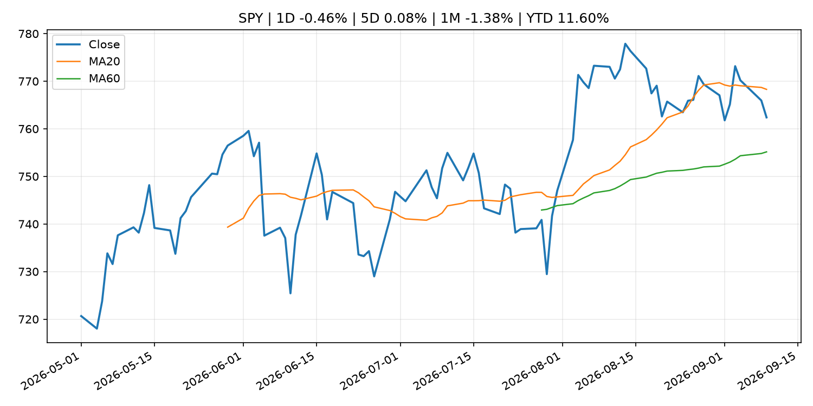
QQQ
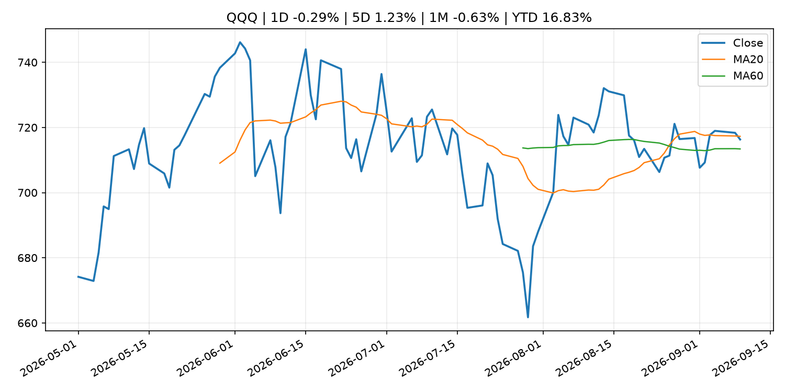
^VIX
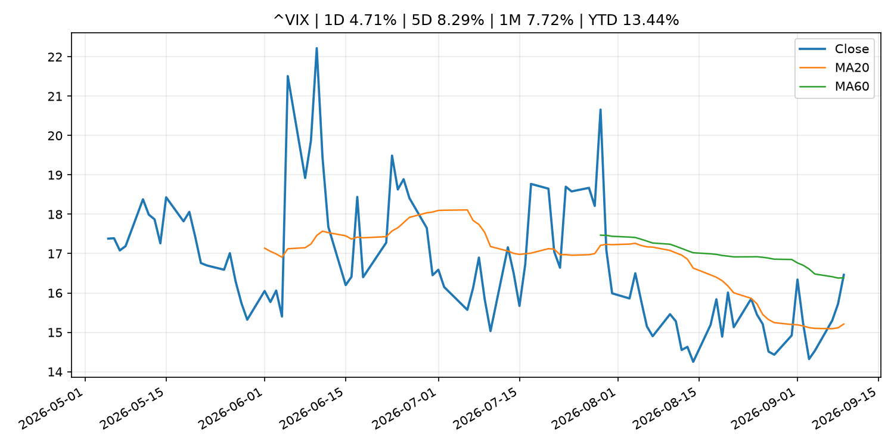
TLT
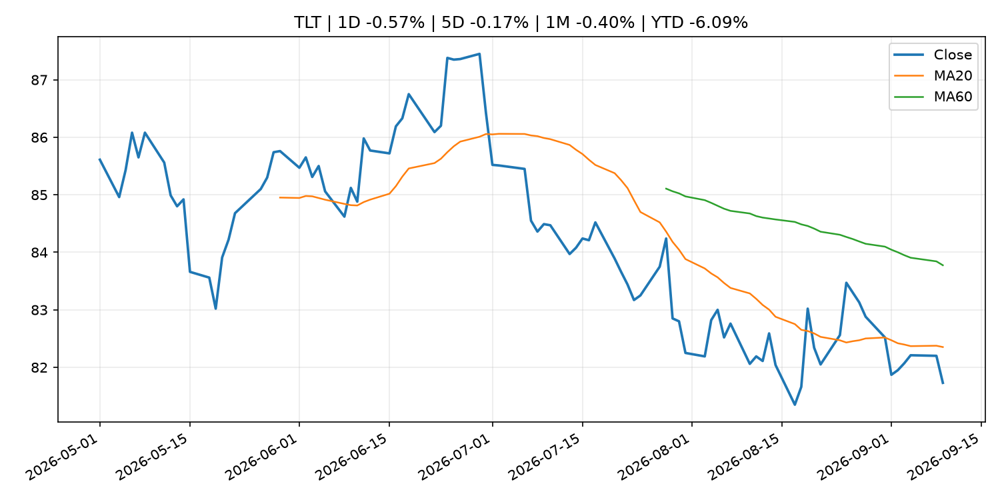
GC=F
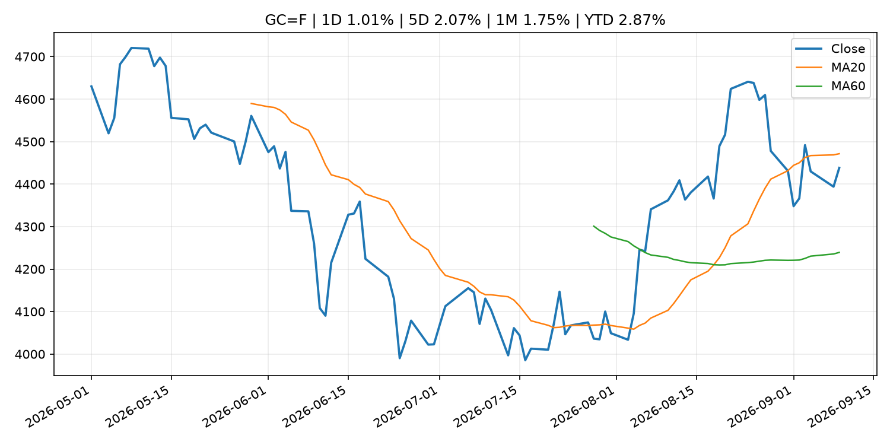
CL=F
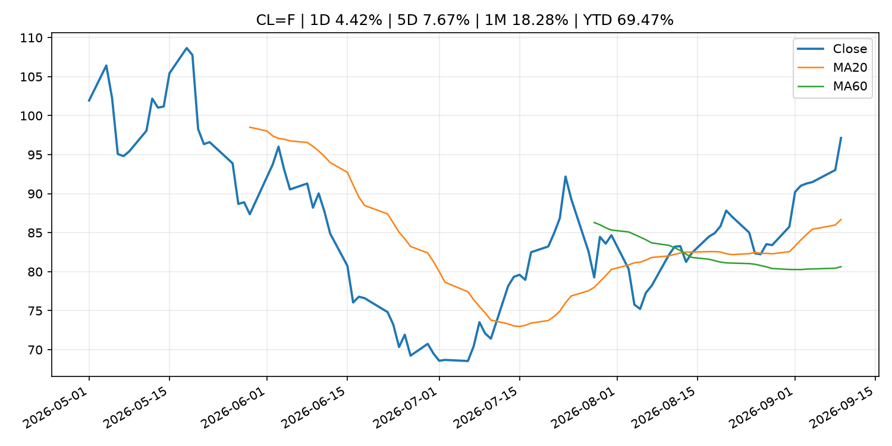
BTC
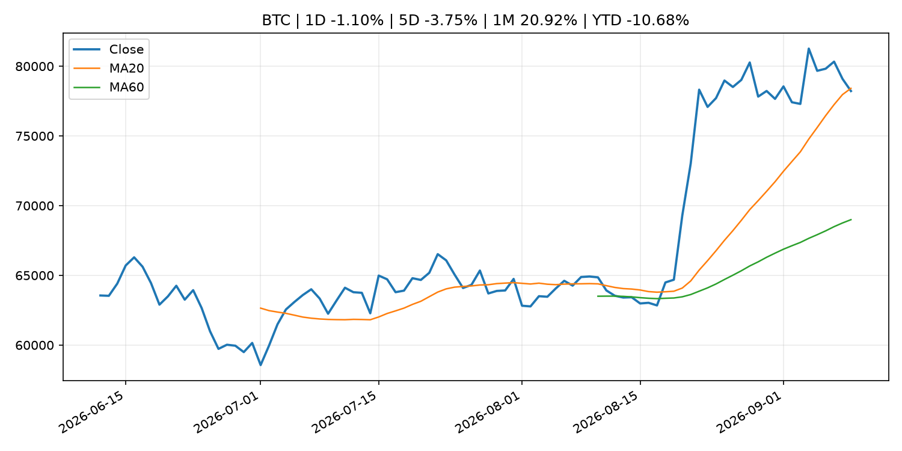
ETH
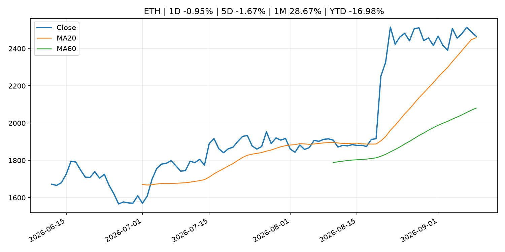
^HSI
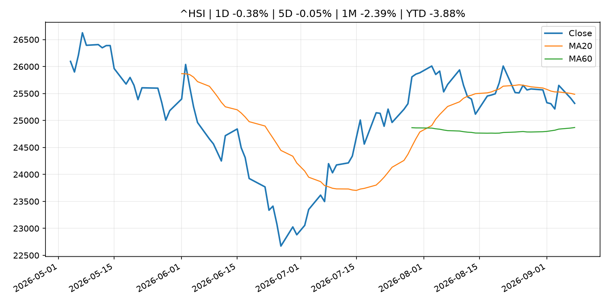
5. 华尔街与机构公开观点
6. 今日重点关注
经济数据：经济数据：暂无可靠公开日历数据；如配置经济日历源后可自动填充。
央行讲话：央行讲话：暂无可靠公开日历数据；重点跟踪 Fed、ECB、BoJ、PBOC 官网 RSS。
财报：财报：暂无可靠数据。
政策事件：政策事件：暂无可靠数据。
风险提醒：风险提醒：关注数据源失败项、突发地缘风险、利率和美元的二阶反应。
7. 英文金融表达与宏观概念
inflation expectations ：通胀预期，指家庭、企业或市场对未来通胀的预估。 例句：Inflation expectations can shape wage bargaining and bond yields.real yield ：实际收益率，名义利率扣除通胀预期后的收益率。 例句：Gold often reacts more to real yields than nominal yields.risk-off ：避险模式，资金偏向美元、国债、黄金等防御资产。 例句：A geopolitical shock can push markets into risk-off mode.supply disruption ：供给扰动，通常指能源或商品供应受冲突、减产或天气影响。 例句：Supply disruption can lift oil prices and inflation expectations.market structure ：市场结构，指交易、托管、清算、ETF、监管等制度安排。 例句：Crypto market structure rules can affect institutional participation.terminal rate ：终端利率，市场预期本轮加息周期的最高政策利率。 例句：A higher terminal rate can pressure growth stocks.
8. 背景材料
9. 数据源、失败项与免责声明
采集时间：2026-09-09T23:50:36
数据源：公开 RSS、Yahoo Finance、CoinGecko、AKShare、FRED、SEC data.sec.gov，以及用户自有 inputs/reports 文件。
合规说明：不绕过 WSJ、Bloomberg、FT、Reuters 等付费墙；对付费媒体只使用公开 RSS 标题、摘要、链接和发布时间。
免责声明：Not financial advice / 非投资建议。本项目仅供个人学习、研究和信息整理，不构成投资建议、交易建议或任何收益承诺。
失败或跳过的数据源：
crypto data failed coin=dogecoin
China market data failed symbol=上证指数: empty dataframe
China market data failed symbol=深证成指: empty dataframe
China market data failed symbol=创业板指: empty dataframe
China market data failed symbol=沪深300: empty dataframe
China market data failed symbol=中证500: empty dataframe
China market data failed symbol=科创50: empty dataframe
FRED_API_KEY not set; skipping FRED macro series
SEC failed cik=0000320193
SEC failed cik=0000789019
SEC failed cik=0001045810
SEC failed cik=0001318605
SEC failed cik=0001577552